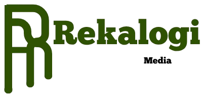

Rekalogi merekonstruksi isu, istilah, dan sistem politik Indonesia jadi konten singkat yang jujur dan netral — dibuat untuk ditonton, bukan sekadar dibaca.

Rekalogi dibuat untuk orang yang ingin paham politik Indonesia, tapi lelah dengan opini yang berpihak dan bahasa yang berbelit.
Kami merekonstruksi ulang isu politik, dari cara kerja pemilu sampai kebijakan publik, jadi bentuk yang singkat dan mudah dicerna — tanpa memihak partai, tokoh, atau golongan mana pun.
Fokus kami ada di video singkat. Website ini hanya pintu masuk untuk mengenal Rekalogi lebih dekat.
Cara kerja pemilu, parlemen, dan lembaga negara — dijelaskan dari nol, tanpa asumsi kamu sudah paham.
Keputusan yang berdampak langsung ke masyarakat, dibedah tanpa jargon dan tanpa memihak.
Peristiwa politik masa lalu yang bentuk cara Indonesia dijalankan hari ini.
Update rutin, format singkat, semua platform.
Satu menit sehari, cukup untuk paham apa yang sebenarnya terjadi.
Mulai dari Instagram